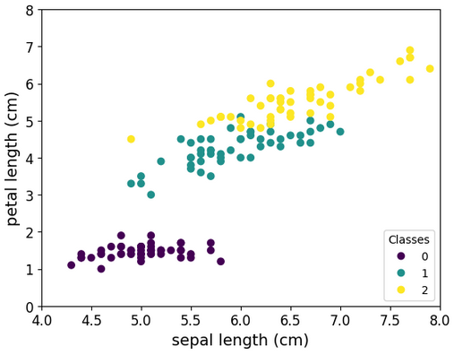
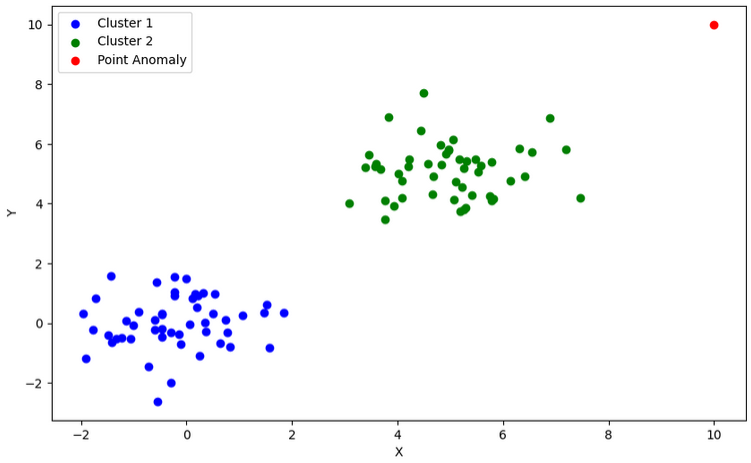

Teaching
The pace of technological advancement is accelerating rapidly. By the time students graduate, much of what they have learned may already be obsolete. This underscores the importance of mastering the process of learning itself, rather than focusing solely on specific skills, techniques, or software that may become outdated. Additionally, as the world grows increasingly interconnected and complex, the ability to think systematically and manage complexity is becoming more crucial. I believe that teaching these fundamental, less-tangible skills is the most important aspect of being an educator for future industrial and systems engineers.
Supervised Machine Learning Tutorial
This notebook goes over the basics of machine learning, with a special focus on supervised machine learning. I demonstrate how to use python load and manipulate data, graph the results, and perform basic regression and classification. Also included are a variety of links to other websites, books, and blogs that students can use to continue learning.
You can access the notebook here.
Unsupervised Machine Learning Tutorial
 Another branch of machine learning is unsupervised machine learning, in which the models learn about the data without any labels on the data. This can consist of finding unknown patterns in the data, outlier analysis, and dimensionality reduction.
You can access the notebook here.